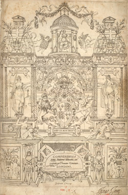
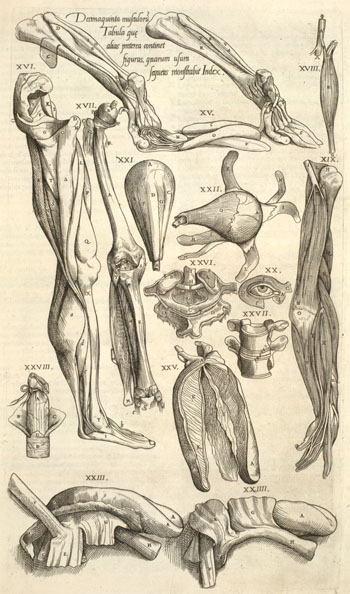

Thomas Geminus's Compendiosa totius Anatomie delineatio , 1545
Drawing Vesalius's wrath and stimulating him to denounce 'extremely inept imitators',
a compendium of his work appeared in London in 1545.(1)
The text of the Epitome , with extra passages taken from the Fabrica ,
was accompanied by a set of 40 plates copied from the woodcuts of the Fabrica .

It is an indicator of the rapid dissemination and appreciation of the originals
that only two years after the publication of the originals in Basle, Thomas
Geminus should have produced this elaborate piece of copying. And it was
evidently a great success, quickly going through at least three editions in England:
one in Latin (1545) and two in English translation
(1553 and 1559).(2)
Thomas Geminus was a pseudonym for Thomas Lambrit, an engraver and printer, who seems to have
been born near Lille and who was active from about 1540; he died in May 1562. O'Malley (Geminus, 1959)
summarizes what little is known about him. Although his book is dependent on Vesalius it did
involve a complete redrawing and rearrangement of the illustrations. Vesalius's illustrations
were woodcuts, the wood blocks set with the letterpress in the formes and all printed together.
But Geminus decided to use engraved copperplates, rather than woodcuts, for his book.
Presumably, at least in part, this was because he himself was a copperplate engraver
and would be able to handle the production without having to subcontract work to specialist
woodblock cutters. However copperplates require a roller press for printing, not the
screw press used for letterpress and woodcuts.
Geminus decided to print his plates on separate sheets. This broke the intimate
connection between text and image that had been so valuable a part of the original
Basle publication; in many cases he had to put together images that had been scattered
over different pages in order to form composite plates:

The plates were large. Geminus manufactured many of them by locking together smaller pieces
of copper, and the joints between these pieces can often be seen quite clearly in the printing.
The results are not beautiful. Geminus was not interested in aesthetic appearance as
Vesalius had been. His was a much more directly practical approach, and when he came
to copy the beautiful full-page figures he eliminated all extraneous detail, notably
the imaginative landscapes which had made Vesalius's illustrations so attractive.
They satisfied their fundamental purpose, however, and even after the last
of the London editions the plates continued to have a life in France.
Jacques Grévin, a French poet and pupil of Ronsard, who was also a physician and
medical writer had André Wechel print editions of Geminus's
work in Paris in 1564, 1565 and in a French translation in 1569, using Geminus's
copperplates. The title of the latter work claims that the plates were engraved
'by order of the late Henry VIII King of England'. Grévin had probably gained
use of them in London in 1560.(3)
Watermark evidence suggests that the plates for the first Paris edition were actually
printed in London and the printed sheets transported to Paris.(4)
In the RCPE edition of Grévin (1564)
the paper has the gauntlet and star watermark also found in the London editions.
(1) A.M. Hind, Engraving
in England in the Sixteenth and Seventeenth Centuries, I, the Tudor Period (Cambridge: 1952) p.43.
The RCPE copy of the 1545 Geminus belonged to Inigo Jones. See O'Malley (1959)
for a discussion of the English editions by Geminus. [Back]
(2) See Cushing p.126 for discussion of the mystery of
a presumed 1552 edition - the EUL English text copy has the undated 1545 title page and
inside a dedication to Edward VI with, on the verso, an address to the readers dated 20 July 1552.
There is no other indication of date. See Brunet (Gemini) who describes an edition of 1552 with,
on the title page, a portrait of Edward VI in place of the arms of Henry VIII.
The EUL example is of the type described by Cushing, p.126, as 'early stages of the 1553 edition'.
According to Larkey (1933) p 387, the editions said to date from 1552 and 1557 are,
in fact, from 1553 or 1559. [Back]
(3) Ruth Mortimer, Harvard College Library...Catalogue Part 1: French Sixteenth-Century
Books, I (1964) p.661, no.541. [Back]
(4) Gauntlet and star as London 1545 edition examined by Mortimer.
The EUL copy of the 1552/1553 English edition has gauntlet of about 62mm and 5-lobed star,
measuring about 82mm in total, e.g. 12th table of muscles or plate inserted after Eiiii verso,
or 9th table of veins, 5th table of nerves, or plate inserted after Giii verso, or plate after Gvi verso,
2nd table of muscles. For this watermark, described as 'Hand', see E. Heawood, Watermarks
(Hilversum, 1950) pp.118-20. [Back]
© 2004 Edinburgh University Library / Royal College of Physicians of Edinburgh
www.lib.ed.ac.uk
24 August 2007
|